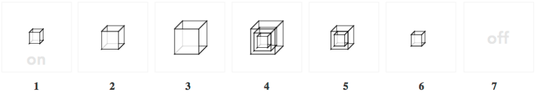
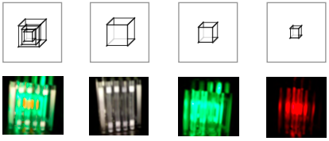
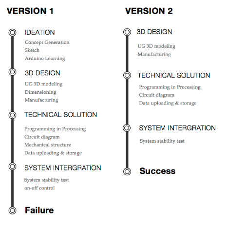
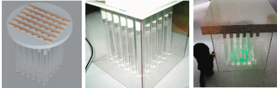

Lucid Interactive Product
Lucid is an interactive installation created for my undergraduate project. It is a lamp installation using Arduino to control the effects of light and using the infrared detector to control its power switch.It is a personal project. I was not only a designer on this project, but also the project manager, responsible for communicating with different workers in the factory to ensure its creation.
Problem
The concept originated from my observation on lamps we encounter everyday at home or in the other places – they just produce light when the user presses the ON button and switches off when the user presses the OFF button.There is no strong interactive experience and emotional feedback. The user cannot feel the life of the lamp.
How we got people to interact with lamp and enjoy it.
My intention was to add enjoyment to our life by making people enjoy the interaction during the switching-on-and-off process on a daily basis.FLUID uses the change of light effects when people interact with lamp. The changes of light add enjoyment and enhance interactive relationship with people. It was called "Enjoy Light" in the first version.
Interaction Process

STEP 1 : When user walks towards FLUID, infrared sensor will detect the user’s proximity and turn on the lamp automatically.
STEP 2 – 4 : The light of the lamp will change accordingly from small cube of red light to a large cube of white light. After the change is complete, it will keep all lights on until user leaves.
STEP 4 – 7 : When the user leaves, the lamp will change gradually from the outside – the light will disappear from the outside first, until the inner-most cube of light disappears.
Explanation

Consideration
1. Using the cubic form In the first version, I used the fan form but the light cannot be seen directly in its form, and also the combination of light effects is less than cubic form.Thus, in the second version, I applied the cubic form and made a model it in the 3D UG software.I chose to use 36 columns which was just right to make a cubic skeleton.
2. Choosing Acrylic MaterialWhen I want to use a material to show the light effect, I want to choose transparent material because, based on intuition, transparent material can reflect light from some perspectives. However my requirement not only showed the light effects but also kept the light effects. How can light be stored in the material? After much thinking, I received information from my supervisor to the effect that the acrylic material can make refraction of light in the grinding parts which means it can store the light in the material.
Design Process
FLUID have 2 iterations for that the first version – FLUID proved to be a failure in terms of light effect. The light effect cannot be tested in the 3D UG software. I changed the arrangement of columns from fan form to cubic form. The process is shown here.
Technical Solution
I applied the Arduino, Processing, etc to combine all the ideas together.During the process, some sketch or idea visualization for the worker is necessary to convey my ideas to their manufacture.
Final Design
